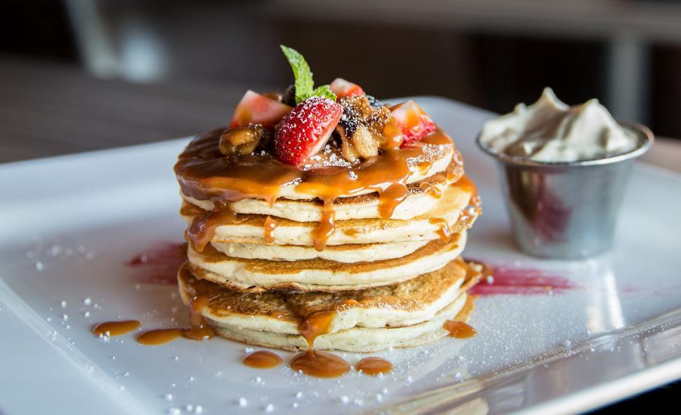

Home
Pancakes

Photo by Ash from Freerange Stock, licensed under CC0.
Description
Imagine waking up to a stack of fluffy pancakes, a golden-brown dream drizzled generously with warm caramel sauce. This dish is the epitome of comfort brunch, marrying a classic batter with the brightness of fresh, juicy strawberries and crunchy nuts. Whipped cream and a sprig of mint elevate it to a weekend masterpiece.
Recipe by Karina Carrel from Cafe Delites
Ingredients
- 2 cups all-purpose or plain flour
- ¼ cup granulated sugar or sweetener
- 4 teaspoons baking powder
- ¼ teaspoon baking soda
- ½ teaspoon salt
- 1¾ cups milk
- ¼ cup butter
- 2 teaspoons pure vanilla extract
- 1 large egg
- Caramel sauce (optional)
- Fresh strawberries (optional)
- Nuts (optional)
- Mint (optional)
- Powdered sugar (optional)
Instructions
- Combine together the flour, sugar (or sweetener), baking powder, baking soda and salt in a large-sized bowl. Make a well in the centre and add the milk, slightly cooled melted butter, vanilla and egg.
- Use a wire whisk to whisk the wet ingredients together first before slowly folding them into the dry ingredients. Mix together until smooth (there may be a couple of lumps but that's okay). (The batter will be thick and creamy in consistency. If you find the batter too thick — doesn't pour off the ladle or out of the measuring cup smoothly — fold a couple tablespoons of extra milk into the batter at a time until reaching desired consistency).
- Set the batter aside and allow to rest while heating up your pan or griddle.
- Heat a nonstick pan or griddle over low-medium heat and wipe over with a little butter to lightly grease pan. Pour ¼ cup of batter onto the pan and spread out gently into a round shape with the back of your ladle or measuring cup.
- When the underside is golden and bubbles begin to appear on the surface, flip with a spatula and cook until golden. Repeat with remaining batter.
- Serve with any optional toppings, or enjoy plain!